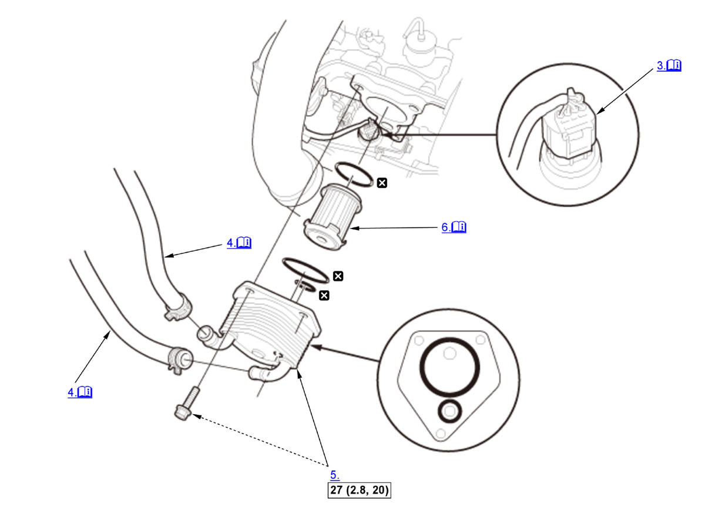

Removal and Installation: Procedure
NOTE:
Numbered call-outs in figure pertain to list numbers in following procedure.
Fig 1: Exploded View Of CVTF Warmer Replacement Components With Torque Specifications (L15B7/L15BA/L15BY - CVT)

Courtesy of HONDA, U.S.A., INC. |
Detailed information, notes and precautions |
 |
Torque: N.m (kgf.m, lbf.ft) |
 |
Replace |
- Engine Coolant - Drain
- Air Cleaner - Remove
- Connector (Solenoid Wire Harness A) - Cover
NOTE: To prevent damage, cover the connector located under the CVTF warmer using a shop towel.
- CVTF Warmer Hose - Disconnect
NOTE: When disconnecting/connecting the hoses, do not bend the warmer pipes excessively, or they will be damaged or deformed.
- CVTF Warmer - Remove
- CVTF Warmer Strainer - Remove
1. Clean the CVTF warmer strainer if necessary. Replace the CVTF warmer strainer, if it is clogged or damaged.
NOTE:- Do not use compressed air to clean the CVTF warmer strainer.
- Soak the CVTF warmer strainer thoroughly in transmission fluid.
- All Removed Parts - Install
1. Install the parts in the reverse order of removal.
NOTE:- Apply a light coat of clean transmission fluid on all O-rings before installation.
- Make sure the O-rings are firmly installed in the grooves.
- Make sure the CVTF warmer strainer is installed in the correct direction.
- Check the connector for corrosion, dirt, or oil, and clean or repair if necessary.
- If necessary, add transmission fluid to the proper level .
- Engine Coolant - Refill